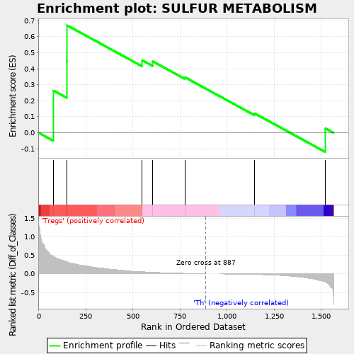
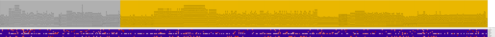
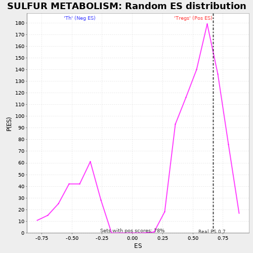

| | | Dataset | expr.pheno.cls#Tregs_versus_Th |
| Phenotype | pheno.cls#Tregs_versus_Th |
| Upregulated in class | Tregs |
| GeneSet | SULFUR METABOLISM |
| Enrichment Score (ES) | 0.67052126 |
| Normalized Enrichment Score (NES) | 1.165177 |
| Nominal p-value | 0.28350514 |
| FDR q-value | 0.84791297 |
| FWER p-Value | 1.0 |
Table: GSEA Results Summary

Fig 1: Enrichment plot: SULFUR METABOLISM
Profile of the Running ES Score & Positions of GeneSet Members on the Rank Ordered List
| PROBE | DESCRIPTION
(from dataset) | GENE SYMBOL | GENE_TITLE | RANK IN GENE LIST | RANK METRIC SCORE | RUNNING ES | CORE ENRICHMENT | | 1 | PAPSS1 | na | | | 78 | 0.464 | 0.2634 | Yes |
| 2 | SUOX | na | | | 148 | 0.335 | 0.4455 | Yes |
| 3 | MPST | na | | | 150 | 0.334 | 0.6705 | Yes |
| 4 | IMPAD1 | na | | | 549 | 0.056 | 0.4527 | No |
| 5 | BPNT1 | na | | | 605 | 0.042 | 0.4458 | No |
| 6 | TST | na | | | 775 | 0.015 | 0.3471 | No |
| 7 | PAPSS2 | na | | | 1146 | -0.017 | 0.1210 | No |
| 8 | ETHE1 | na | | | 1521 | -0.218 | 0.0282 | No |
Table: GSEA details [plain text format]

Fig 2: SULFUR METABOLISM
Blue-Pink O' Gram in the Space of the Analyzed GeneSet

Fig 3: SULFUR METABOLISM: Random ES distribution
Gene set null distribution of ES for SULFUR METABOLISM